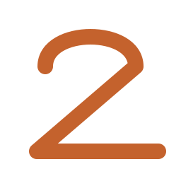

Warm-linen canvas. The stacked logo fades in, the tagline ghosts in below in italic Fraunces. The mark pulses once gently (1.04 scale, 680ms soft spring) before the app transitions to the auth flow.
9:41100%

WAY2MOVE
Train from the ground up.
Motion: Mark fades in (300ms), wordmark slides in 200ms after, tagline ghosts in at 500ms. Whole sequence ~900ms.
2
Sign in
Warm canvas, quiet form. Inputs have no hard border — just a 1.5px underline that terracottas on focus. Primary button fills on tap. OAuth options sit below with neutral outlines, equal weight to each other.
Validation: Sage checkmark appears inline when email format is valid. Error states use Clay Red #BE4A3A — underline + helper text, never a red card.
3
Sign up
Same quiet structure as sign-in. The valid email shows a sage check. Password strength bar is sage-tinted. Legal copy at the bottom, no dark patterns around consent.
Password strength: 4-segment bar, sage for "good/great", honey for "fair", clay red only for "weak". The positive framing ("Good password") is part of the non-guilty personality.
4
Onboarding — Welcome
Step 1 of 6 in the onboarding flow. The Fraunces italic line is the emotional centerpiece; the illustration is a stylized figure standing on the same ground-line as the logo mark. 5-dot progress at the top.
Six quick questions. We'll build a program that starts from the ground and works its way up.
Takes about 3 minutes
Skip anything, come back later.
Figure: The sage silhouette sits directly on a terracotta ground line — a visual echo of the logo mark. Same metaphor ("standing on a foundation") appears on the splash, onboarding, and the home dashboard empty state.
5
Home dashboard
Hero greeting in Fraunces 40px. Streak chip to the right. One today-card as the emotional centerpiece (not 9 equal-weight sections like the current dashboard). Below: weekly strip, monthly heat map preview, one active goal, a quick-log scroller.
9:41100%
Good morning, Marco.
Tuesday, April 21
12
TODAY · 42 MINWeek 3 · Day 2
Foundation — Lower Body
6 exercises including deep squat hold, 90/90 breathing, and glute med activation.
Hip mobility
PRI-rooted
THIS WEEK
M
T
21
W
T
F
S
S
ACTIVE GOAL
40%
Deep squat hold · 2 min
0:48 → 2:00
LINKED · Ant. pelvic tilt
LOG TODAY
Journal
Meal
Sleep
Photo
Home
Body
Library
Calendar
Profile
Why one focal card, not nine sections: The current home has 9 competing sections. In Phase 1, the user's morning task is "start today's session" (or log what happened). Everything else is a quick glance. The focal card earns a celebration moment; the rest earn one row each.
6
Active session
Mid-workout. Current exercise has a terracotta left border; completed exercises fade. Sets are inline rows with reps/kg inputs and a tap-to-complete circle that fills sage. RPE is a 1–10 dot slider on a sage → honey → terracotta gradient track. Complete-workout button is pinned at the bottom.
9:41100%
18:32
Foundation — Lower Body
3 of 6 complete · 18 min
90/90 breathing
3 × 8 · RPE 4
Deep squat hold — supported
3 × 45s · CURRENT
1
RPE 5
2
RPE 6
3
RPE
EASYRPE · effortMAX
Glute med activation
3 × 12 each side
NEXT
Hip flexor stretch
2 × 60s each side
Single-leg RDL
3 × 8 each side
RPE slider: gradient from sage (easy) → honey (moderate) → terracotta (hard). Tap anywhere on the track to set. The dot "settles" into place with a 280ms ease-out, never bounces.
7
Session summary
Post-workout. Warm canvas. Single Fraunces line — "Session complete." A sage check mark draws in over 450ms. Stats row in Manrope. If there's a progression suggestion (advance reps, add load, or deload for recovery), its card appears below with appropriate accent.
9:41100%
Session complete.
Quiet win. One more foundation block laid.
6
EXERCISES
18
SETS
42m
DURATION
READY TO ADVANCE
Deep squat hold — add 15 seconds
You've hit 3 strong sessions at 45s with RPE ≤ 6. Bump to 60s next time?
How did that feel?
30-second voice journal — builds your body awareness.
Progression card: terracotta for "advance". If recovery signals are low (poor sleep or high RPE trend), the card turns honey and says "Deload — keep weights steady." This is Way2Move's "motivating not guilty" principle in action.
8
Exercise library
Single search bar at the top, filter chips condensed to one horizontal scroller below. Exercise cards show a body-region icon on the left, title, and 2–3 outlined tag pills. Tapping opens detail via a Hero shared-element transition.
9:41100%
Library
42 results
90/90 breathing
PRIBreathBeginner
Deep squat hold — supported
HipMobilityIntermediate
Glute med activation — clamshell
HipStabilityBeginner
Deep neck flexor — chin nod
NeckPostureBeginner
Single-leg RDL — bodyweight
HipStrengthIntermediate
Home
Body
Library
Calendar
Profile
Difficulty pills: sage (beginner), honey (intermediate), terracotta (advanced). Reinforces the severity color language used elsewhere.
9
Exercise detail
Hero thumbnail at the top. Title, tag pills, and an anatomy inset showing which body region this targets. Coaching cues open by default; progressions / regressions collapse. "Add to session" pinned at the bottom.
9:41100%
1:42
HIPMOBILITYINTERMEDIATE
Deep squat hold — supported
A 90-second hold at the bottom of a squat, using a band or doorframe for balance. Restores hip and ankle mobility while reloading the pelvic floor.
Targets
Hip capsule · Pelvic floor · Ankle dorsiflexion
Fixes: Anterior pelvic tilt
Coaching cues
1. Feet shoulder-width, toes 15° out.
2. Sit into the heels, knees track over toes.
3. Breathe into the lower back — expand 360°.
4. Hold 45–90s. Come up slowly, no bounce.
3 progressions
2 regressions
Body region inset: a small simplified silhouette with the targeted region highlighted in terracotta. Same silhouette style as Screen 14 (compensation profile) — visual consistency across body-related screens.
10
Program detail
Program name in Fraunces, duration + days/week as supporting metadata. Weekly schedule as 7 vertical day chips. Training days filled terracotta with an exercise count; rest days hollow sage. Tap a day to expand inline.
9:41100%
Your program
WEEK 3 OF 85 DAYS / WEEK
Posture Reset
8-week foundational program targeting anterior pelvic tilt and forward head posture. Built from your assessment.
Program progress38%
WEEK 3 · THIS WEEK
MON
Breathing + Hip mobility
4 exercises · 28 min · RPE 5
TUE
21
Foundation — Lower Body
TODAY · 6 exercises · ~42 min
• 90/90 breathing — 3×8
• Deep squat hold — 3×45s
• Glute med activation — 3×12
• Hip flexor stretch — 2×60s
• Single-leg RDL — 3×8
• Standing meditation — 5 min
WED
Rest day
Optional: 10-min walk or foam roll
THU
23
Foundation — Upper Body
5 exercises · ~36 min
FRI
24
Gait cycle session
Walking drills · 25 min
SAT
25
Recovery — foam roll + breath
3 exercises · 20 min
SUN
Rest day
Optional: nature walk
Inline expansion: "today" expands inline rather than opening a modal. Keeps the weekly rhythm visible while giving detail. Only one day can be expanded at a time; tapping another collapses the current.
11
Assessment — sitting hours
Step 2 of 5 in the initial assessment. The question is framed gently in Fraunces italic. Large option cards with illustrations, one-at-a-time selection, terracotta left border when chosen. Progress dots at the top.
Including desk work, driving, meals, and relaxing.
Less than 4 hours
Active on your feet most of the day
4–7 hours
Typical desk worker with some movement
7–10 hours
Sedentary most of the day
10+ hours
Heavy desk / remote work lifestyle
Illustration intensity: the small stacked-bar icon uses severity colors (sage → honey → terracotta → clay red) to subtly hint that more sitting → more potential compensations to address. Educational without being preachy.
12
Assessment results
Score ring as the centerpiece — terracotta-to-sage gradient showing movement quality. Score in Fraunces 52px inside. Below: detected compensations with severity bars. Each row is tappable. CTA pinned: "Build my program".
9:41100%
Your results
70
MOVEMENT SCORE
Solid foundation — room to build.
You showed 3 compensations worth addressing. None are severe.
DETECTED COMPENSATIONS
Anterior pelvic tilt
Pelvis rotates forward, over-arched lower back
MODERATE
Forward head posture
Chin juts forward of shoulders
MILD
Weak glute med (R side)
Hip drops slightly on single-leg stance
MILD
Score ring gradient: terracotta (low) → honey (mid) → sage (high). Score of 70 sits in the sage range, so the ring ends on a green note. The gradient is metaphoric: you start in the "active" terracotta space and earn your way to calm sage.
13
AI program — review & adjust
Top: compensation summary carousel (one card per detected pattern, with top 2 exercises). Bottom: proposed weekly schedule as 7 day chips, one expanded to show exercises with inline-editable 3×12 badges and a soft × to remove. Accept button terracotta.
9:41100%
Your program
Here's what we built.
Tap anything to adjust before accepting.
TARGETING 3 COMPENSATIONS
Anterior pelvic tilt
MODERATE
• 90/90 breathing • Deep squat hold • Hip flexor stretch
Forward head posture
MILD
• Deep neck flexor • Thoracic ext.
Weak glute med
MILD
• Clamshell • Single-leg RDL
WEEKLY SCHEDULE
TUE
Lower Body — 6 exercises
~42 min
90/90 breathing
Breath · Beginner
Deep squat hold
Hip · Intermediate
Glute med — clamshell
Hip · Beginner
WED
Rest day
THU
Upper Body — 5 exercises
~36 min
FRI
Gait drills — 4 exercises
~25 min
Edit affordance: tap the 3 × 12 badge to edit sets/reps inline; tap × to remove with a sage "Undo" snackbar that auto-dismisses after 4s. No modals — every edit is inline.
14
Compensation profile — body map
This is the app's visual signature. A stylized front-view silhouette with regions glowing by severity — the rest of the body sits warm-neutral. Filter tabs at top (Active / Improving / Resolved). Tap a region to open a bottom-sheet with detail.
9:41100%
Your body
MILDMODERATESIGNIFICANT
ACTIVE · 3
Anterior pelvic tilt
Detected 3 weeks ago · Linked goal: Deep squat
Forward head posture
Detected 3 weeks ago · Desk job factor
Weak glute med (R)
Detected from video analysis
Home
Body
Library
Calendar
Profile
Radial glow: each active region glows outward from a center point, not a sharp-bordered highlight. The silhouette stays readable; the glow communicates severity by both color and intensity. When a compensation moves to Resolved, the glow fades out over ~900ms and the marker dot shifts to Mist Sage.
15
Goals
Each goal card shows a progress ring on the left (terracotta stroke on a fog base). Goal title in Manrope 700. Category pill outlined. Linked compensation chip (sage) when applicable. Add-goal button in app bar, not FAB.
9:41100%
Goals
4
ACTIVE
2
ACHIEVED
47
DAYS IN
40%
Deep squat hold — 2 min
0:48 → 2:00
MobilityLinked
80%
Dead hang — 90s
72s → 90s
Strength
20%
Handstand — 15s hold
3s → 15s
Balance
50%
Walking gait — clean strike
Heel-midfoot transition
GaitLinked
Home
Body
Library
Calendar
Profile
Progress rings everywhere: rings are the visual language for "how far along are you". Used on goal cards, in the dashboard "active goal" row, and at the center of the goal detail screen.
16
Goal detail
Hero is a large progress ring, Fraunces 64px percentage in the middle. Current → target below. Linked compensation chip and linked exercises as mini-cards. Mark-as-achieved button sage filled. Once achieved, a soft-gold trophy appears with the completion date in Fraunces italic.
9:41100%
40%
TO GOAL
MOBILITYPRI FOUNDATION
Deep squat hold — 2 min
0:48 → 2:00
Holding a relaxed deep squat for 2 minutes restores hip, ankle, and pelvic floor function — the foundation for every standing movement. Most adults can't start here; you'll build up over weeks.
LINKED TO
Anterior pelvic tilt
Working toward resolution
EXERCISES THAT HELP
Deep squat hold — supported
Hip · Mobility · 2 min
Hip flexor stretch — couch
Hip · Mobility · 60s
Mark as achieved: sage button (not terracotta) — this is a body-awareness confirmation, not a primary action. On tap: ring fills to 100% with a slow 900ms ease-out, Soft Gold trophy icon appears, Fraunces italic "Achieved · April 21" settles in. Rare, earned moment.
17
Journal — voice mode
This screen is a pause, not a form. Warm canvas, italic Fraunces prompt. The 96px terracotta mic breathes gently — 2.4s pulse, no loud red recording indicator. Live transcription appears in Fraunces italic, one sentence at a time. Mood/energy/body chips are optional.
9:41100%
WAKE-UP JOURNAL
How are you this morning?
"Slept pretty well. About seven and a half hours, woke up once."
"Low back is tight still, right side glute feels a bit dead. Want to do the posture reset session today..."
listening…
0:28
Tap to stop
HOW DO YOU FEEL? (OPTIONAL)
Breath ring: two soft terracotta rings pulse outward from the mic in 2.4s loops (one offset by 1.2s). The effect is slow, meditative — deliberately not a "recording is hot" flash. This is Way2Move's "breath, not bounce" motion principle in its purest form.
18
Meal log
Title in Fraunces 28px. Meal type as horizontal chips. Multi-line description with a quiet underline. 5-emoji stomach-feeling selector — intentionally playful, the one exception to Way2Move's icon monochromy. IBS-aware, approachable.
9:41100%
Log a meal.
Tuesday, April 21 · 13:42
MEAL TYPE
WHAT DID YOU HAVE?
HOW'S YOUR GUT?
😣
Bad
😕
Off
😐
Okay
🙂
Good
😊
Great
NOTES (OPTIONAL)
Gut pattern: Your Good+ days over the last 14 days almost always include greens and fish. Keep it up.
Why emoji-based: gut feeling is an imprecise, subjective signal. Emoji speak this language better than a 1–5 numeric scale. The selected emoji slightly scales up (1.15) — visual confirmation that's consistent with "settle, not bounce" motion.
19
Sleep log
Fraunces 28px title. Time pickers inline — tap to open. The calculated duration is the hero, Fraunces 40px. 5 quality chips with micro-illustrations. History chart below shows the last 7 days with warm-toned bars (sage for good, honey for okay, terracotta for poor).
9:41100%
Last night
How'd you sleep?
Monday night → Tuesday morning
BED
23:12
Mon
WAKE
06:44
Tue
7h 32m
TIME IN BED
QUALITY
😵
Poor
😴
Fair
🌙
Okay
⭐
Good
✨
Great
LAST 7 NIGHTS
T
W
T
F
S
S
M
Avg: 7h 18mQuality: Good
Chart colors: bars map directly to quality — sage (Good/Great), honey (Okay/Fair), terracotta (Poor). Same severity language as the rest of the app; no new semantic system for sleep.
20
Profile
Larger avatar with sage ring. Name in Fraunces 32px. Compact stats row. Navigation grouped into 4 sections (Training / Body / Daily / You), each as a card on warm linen. Sign out pushed to the bottom as a quiet ghost button, never in the app bar.
9:41100%
M
Marco
marco@example.com · Week 3 · Posture Reset
47
SESSIONS
12
STREAK
2
ACHIEVED
TRAINING
Your program
Exercise library
Progression settings
BODY AWARENESS
Assessments
2
Compensations
Goals
DAILY LOG
Journal history
Nutrition
Sleep history
YOU
Progress photos
Edit profile
Help & about
Way2Move · v1.0.0
Home
Body
Library
Calendar
Profile
Why 4 grouped sections: the current profile mixes stats with navigation with settings. Grouping by purpose (Training / Body / Daily / You) matches the user's mental model and keeps each card scannable. Sign out pushed to the bottom as a ghost button — it's an infrequent, destructive action and doesn't deserve prime real estate.
"Train from the ground up."
Next steps:
1. Marco reviews this mockups page and decides which screens ship in the first Flutter pass
2. Update frontend/mobile/lib/core/theme/ with the new tokens (colors, typography, spacing, motion)
3. Apply screen-by-screen per the priority ordering in discovery/plan.md
4. TDD per the project's Clean Architecture rules — widget tests for each screen state
5. Run the app on a real device in a sunny room and a dark room — the warm-linen light mode was chosen specifically to work outdoors and not glare indoors
20 screens · Brand identity v1 · 2026-04-21 · Designed following the Way2Fly revamp process